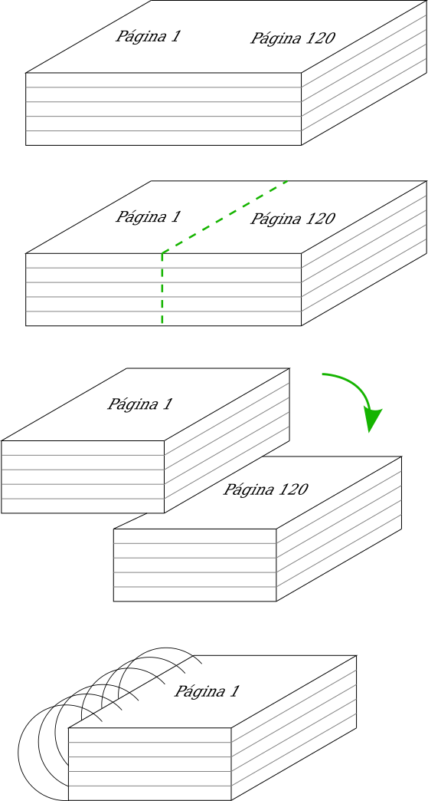
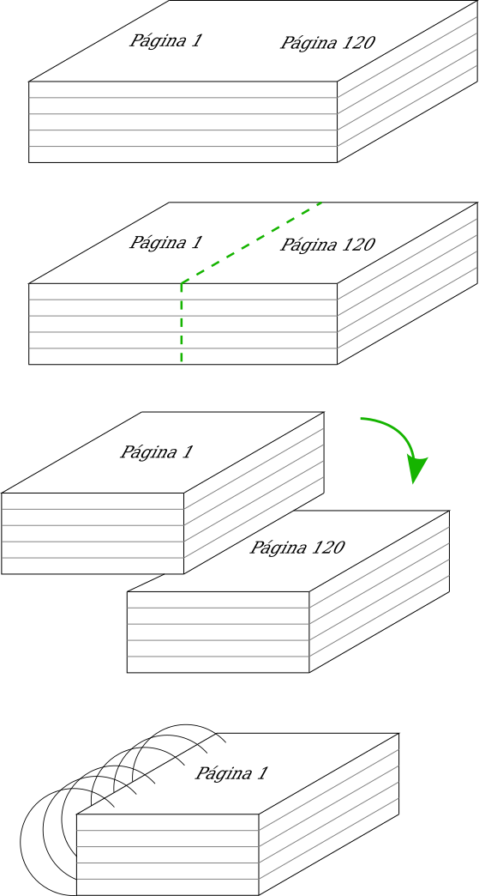

Convertir un libro PDF en formato de libro de mano (handbook) y ahorrar papel
Por lo general solemos tener mucho más que varios libros en formato PDF, pero no
hay nada mejor que leer sobre papel, además de que poder leer un libro impreso
mientras vas en el transporte publico, mientras esperas que empiece la siguiente
clase, o simplemente tenerlo a la mano para leer en cada oportunidad es algo
invaluable.
El primer intento por usar menos papel es el más intuitivo: imprimir a doble
cara, con lo cual conseguimos que el número de hojas de papel usadas sea 1/2
el número de páginas a imprimir, pero un libro del tamaño de una hoja de
papel A4 resulta muy grande e incomodo para llevar siempre a la mano.
En un nuevo intento podríamos imprimir varias páginas por plana, hasta el punto
en que sea legible (por lo general no más de 2 páginas por plana), y así
conseguimos que el número de hojas de papel empleadas se de 1/4 el número de
páginas del libro a imprimir. Perfecto! Ahora usaremos mucho menos papel, pero
aún tenemos el problema de que el libro resultante es de un tamaño (A4) y
simplemente no es lo bastante cómodo.
Lo mejor seria poder cortar las hojas por la mitad, aprovechando el hecho de que
imprimimos 2 páginas por plana, y luego formar el libro de un tamaño A5, el cual
si que es cómodo de llevar a la mano. Al hacerlo, sin embargo, las páginas del
libro se vuelven imposibles de colocar en el orden correcto porque no se
corresponden con la que cada una tiene impresa en su reverso.
Para solucionarlo, he aprovechado las herramientas que proporciona el paquete
poppler, y he escrito un script que se encargará de reorganizar las páginas
del documento de forma apropiada para ser impreso según lo antes descrito.
El script en cuestión es este:
https://github.com/alx741/pdfhbmk/blob/master/pdfhbmk.sh
Lo descargamos y le damos permisos de ejecución:
$ chmod +x pdfhbmk.sh
Luego de asegurarnos de tener instalado poppler en nuestro sistema lo podemos
usar así:
$ ./pdfhbmk.sh libro.pdf
Donde libro.pdf es el documento que queremos transformar.
La ejecución del script nos dará como resultado un documento del tipo:
handbook_libro.pdf
Este lo podemos imprimir a doble cara. Una vez impreso, cortamos todas la hojas
por la mitad (a lo ancho) para obtener cada pagina separada (en tamaño A5) y en
2 montones, luego tomamos el 1er montón y lo colocamos sobre el 2do montón.
Anillamos o encuadernamos el resultado y tenemos nuestro libro de mano.

Por lo general solemos tener mucho más que varios libros en formato PDF, pero no hay nada mejor que leer sobre papel, además de que poder leer un libro impreso mientras vas en el transporte publico, mientras esperas que empiece la siguiente clase, o simplemente tenerlo a la mano para leer en cada oportunidad es algo invaluable.
El primer intento por usar menos papel es el más intuitivo: imprimir a doble cara, con lo cual conseguimos que el número de hojas de papel usadas sea 1/2 el número de páginas a imprimir, pero un libro del tamaño de una hoja de papel A4 resulta muy grande e incomodo para llevar siempre a la mano.
En un nuevo intento podríamos imprimir varias páginas por plana, hasta el punto en que sea legible (por lo general no más de 2 páginas por plana), y así conseguimos que el número de hojas de papel empleadas se de 1/4 el número de páginas del libro a imprimir. Perfecto! Ahora usaremos mucho menos papel, pero aún tenemos el problema de que el libro resultante es de un tamaño (A4) y simplemente no es lo bastante cómodo.
Lo mejor seria poder cortar las hojas por la mitad, aprovechando el hecho de que imprimimos 2 páginas por plana, y luego formar el libro de un tamaño A5, el cual si que es cómodo de llevar a la mano. Al hacerlo, sin embargo, las páginas del libro se vuelven imposibles de colocar en el orden correcto porque no se corresponden con la que cada una tiene impresa en su reverso.
Para solucionarlo, he aprovechado las herramientas que proporciona el paquete poppler, y he escrito un script que se encargará de reorganizar las páginas del documento de forma apropiada para ser impreso según lo antes descrito.
El script en cuestión es este:
https://github.com/alx741/pdfhbmk/blob/master/pdfhbmk.sh
Lo descargamos y le damos permisos de ejecución:
$ chmod +x pdfhbmk.shLuego de asegurarnos de tener instalado poppler en nuestro sistema lo podemos usar así:
$ ./pdfhbmk.sh libro.pdfDonde libro.pdf es el documento que queremos transformar.
La ejecución del script nos dará como resultado un documento del tipo:
handbook_libro.pdf
Este lo podemos imprimir a doble cara. Una vez impreso, cortamos todas la hojas por la mitad (a lo ancho) para obtener cada pagina separada (en tamaño A5) y en 2 montones, luego tomamos el 1er montón y lo colocamos sobre el 2do montón. Anillamos o encuadernamos el resultado y tenemos nuestro libro de mano.
